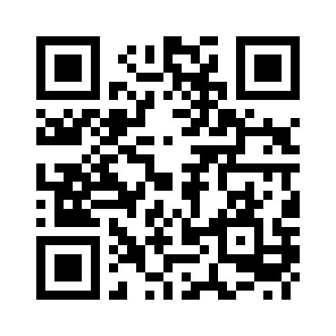

拝啓 暑い日が続きますが、いかがお過ごしでしょうか。
いつもおいしい野菜や果物をいただき、ありがとうございます。先日のスイカも、子どもと二人であっという間にいただきました。本当においしくて、二人とも大喜びでした。
いただいてばかりで、いつか何かお返しをと思うのですが、私は畑のことがまだ何も分かりません。自分でも花や野菜を育ててお返しできたらと思うものの、いつになることやら分かりません。
そこで、今の私にできることをひとつだけ、作ってみました。「畑メモ」という、スマホで使える小さな道具です。売上や作業を、指先ひとつで記録できます。
一、無料です。登録もログインも要りません。
一、記録は〇〇さんのスマホの中だけに保存されます。私の側から読むことは一切できません。どうぞご安心ください。
一、「こんな機能がほしい」というものがございましたら、いつでもお声かけください。喜んでお作りします。
一、もしお役に立たなければ、この紙ごと捨てていただいて構いません。どうぞお気になさらず。
左のQRコードをスマホのカメラにかざすと、すぐにお使いいただけます。開いた画面で「ホーム画面に追加」を押すと、アプリのように使えます。
少しでも畑仕事の足しになれば、これほどうれしいことはありません。今後とも、どうぞよろしくお願いいたします。
敬具
二〇二六年 盛夏
鮑（ホウ）
